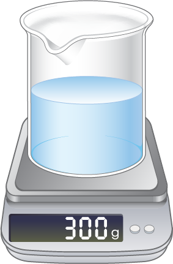
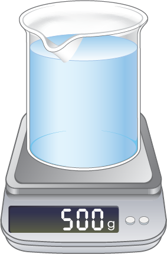

과학 시간에 소금물을 만들어 ‘용액의 진하기 실험’을 했습니다. 슬기는 소금 60 g을 녹여 소금물 300 g을 만들었고, 연수는 소금 100 g을 녹여 소금물 500 g을 만들었습니다. 누가 만든 소금물이 더 진한지 비교해 봅시다.
그림
물음 1
물음 2
물음 3

슬기

연수
전자저울은 비커를 올려놓은 후
‘0’으로 맞추어야 해요.
슬기가 만든 소금물에서 소금물 양에 대한 소금 양의 비율은 몇 %인가요?
20
%
연수가 만든 소금물에서 소금물 양에 대한 소금 양의 비율은 몇 %인가요?
20
%
누가 만든 소금물이 더 진한가요?
진하기가 같습니다.
60
300
을 백분율로 나타내면 20 %입니다.
100
500
을 백분율로 나타내면 20 %입니다.